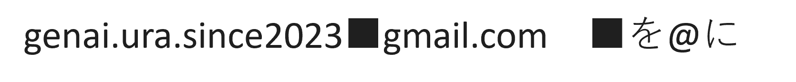

（固定）研究支援における生成AI利活用アンケートにご協力をお願いします
2025年時点で研究支援者がどのように生成AIと関わっているのか、調査しております。ぜひご協力ください。
「生成AIとURA業務 勉強会」は、大学や研究機関におけるリサーチ・アドミニストレーター（URA）業務に、生成AIをいかに活用できるかを探求するコミュニティです。最新のAI技術トレンドを学び、具体的な業務効率化のアイデアや実践事例を共有し合うことを目的としています。
2025年時点で研究支援者がどのように生成AIと関わっているのか、調査しております。ぜひご協力ください。
12/19(金)に「研究推進のための生成AI活用講座」と題して第2回公開勉強会（講師：九大URA・安部）を開催します。詳細と参加登録は題名からクリックしご覧ください。
11/28(金) 18:00~に「研究推進のための生成AI活用講座」と題して第1回公開勉強会（講師：九大URA・安部）を開催します。詳細と参加登録は題名からクリックしご覧ください。
初めての公開勉強会を開催し、約59名の方が参加いたしました。九州大学の阿部さまにご講演をいただきました。
①RA協議会年次大会セッション運営の振り返り、②第一回公開勉強会の運営について、③アンケートの回答者増に向けて、情報交換を行った。各公開勉強会の担当者を決定した。
約140名の方々の前で当勉強会の活動と、生成AIとURAの今後の在り方について議論を行いました。詳細と題名からクリックしご覧ください。
私たちの勉強会は、RA協議会 第9回年次大会 教育セッション2「生成系AI とURA 業務」の開催をきっかけに、数名の有志によって発足しました。その後、2024年にRA協議会スキルプログラム専門委員会公認テーマ別勉強会に採択され、2025年5月に同テーマ別勉強会に採択され現在の活動に至ります。

本勉強会に関するご質問や参加希望については、勉強会代表者の渡邉までご連絡ください。
（画像が表示されない場合: genai.ura.since2023 [at] gmail.com ※[at]を@に変換してください）